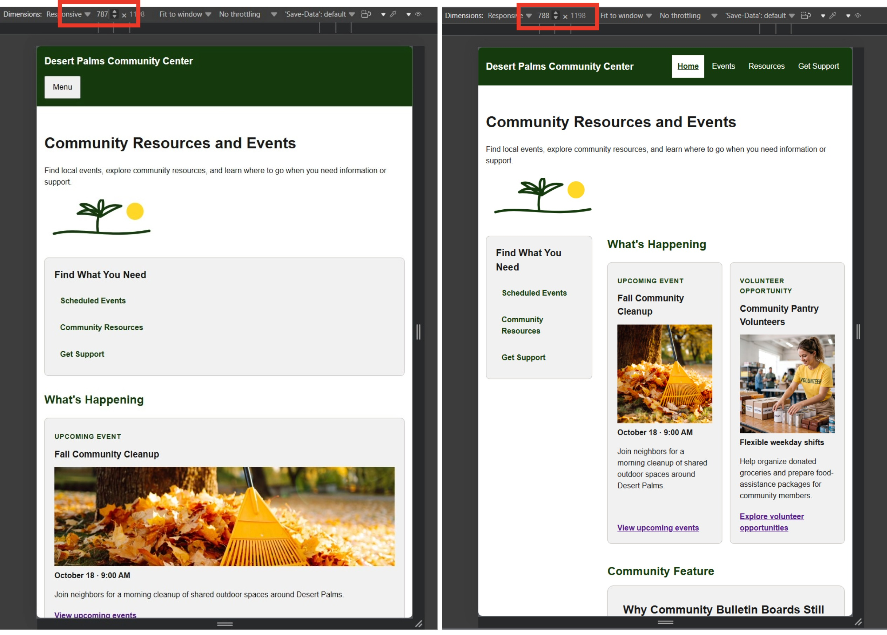
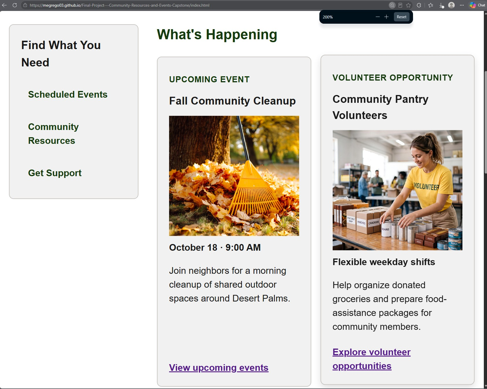

1. Project and URLs
- Project, audience, and purpose
- Desert Palms Community Center is designed for people looking for local resources, events, volunteer opportunities, and support services. The site helps visitors discover community information, locate useful services, and request additional support.
- Priority tasks
- Find upcoming community events, locate community resources, volunteer opportunities, services, and request information or support.
- Pages
- Home, Events, Resources, and Get Support.
- Repository
- GitHub Repository
- Published site
- Desert Palms Community Center
- Code defense
- Pre-recorded code defense
2. Concise Requirement Map
| Requirement | Location | Purpose | Reuse decision |
|---|---|---|---|
| Semantic structure | All four HTML pages | Provides consistent landmarks, headings, metadata, and logical source order. | Refactor |
| Shared design system | styles.css | Provides consistent colors, spacing, typography, components, and interaction states. | Refactor |
| Figure and caption | index.html | Supports the community bulletin-board feature with meaningful visual content. | Adapt |
| Accessible data table | events.html | Allows visitors to compare upcoming community events. | Adapt |
| Purposeful form | support.html | Allows visitors to request information or support. | Adapt |
| SVG | index.html | Provides a custom visual identity for the Desert Palms Community Center. | New |
| Responsive navigation and layout | All pages and navigation.js | Provides consistent access to all major pages across narrow and wide layouts. | Refactor |
| Positioning and layering | Home page task panel | Uses sticky positioning to keep priority navigation available while visitors move through the Home page on wider screens. | Adapt |
| CSS shape | Home page feature image | Creates purposeful text flow around the feature image while retaining a readable fallback. | Adapt |
| Effect or motion | Home page highlight cards | Provides hover and focus feedback through a subtle card lift and shadow while including a reduced-motion fallback. | Adapt |
| Testing | Published website | Verifies responsive behavior, accessibility, form behavior, resilience, and browser compatibility. | New |
| Documentation | capstone-evidence.html | Records the project plan, release checks, findings, repairs, and supporting evidence. | New |
3. Focused Release Check
- HTML validation: Pass
- CSS validation: Reviewed; CSS Shapes properties and one vendor-prefixed pseudo-element were intentionally retained.
- Published links and assets: Pass
- 320 CSS pixels and 200% zoom: Pass
- Keyboard and visible focus: Pass
- Form labels, constraints, errors, and recovery: Pass
- Reduced motion and JavaScript unavailable: Pass
- Two current browsers: Pass
4. Three Findings and Repairs
| Finding and condition | Impact | Repair | Exact retest and result |
|---|---|---|---|
| At an intermediate width around 700px-790px, the Home page layout became cramped because the sidebar and two-column highlight cards did not have enough space. | Home page layout, especially the Find What You Need panel and What's Happening cards. | Adjusted the responsive breakpoint so the Home layout and highlight cards stack below 49.25em. | Retested at 787px and 788px. At 787px, the layout stacked correctly. At 788px, the desktop navigation, sidebar, and two-column highlight layout returned without cramped content or page-level overflow. |
| HTML validation reported that the Events section lacked an identifying heading. | Events page heading structure and Upcoming Events table section. | Changed the main page heading to Scheduled Events and added an Upcoming Events heading to identify the table section. | Ran the HTML validator again. The section-heading warning was resolved. |
| Responsive and zoom testing showed that the published site remained usable at 320 CSS pixels and 200% browser zoom. | Navigation, page content, cards, images, headings, and responsive layouts across the published site. | No repair was required because no overflow, overlapping content, or loss of functionality was observed. | Repeated the 320px and 200% zoom tests. Content remained readable and usable with no page-level horizontal overflow observed. |
5. Screenshots


6. Sources, Assets, and AI
MDN/official sources:
- Structuring documents
- section HTML element
- aria-current attribute
- Responsive web design
- CSS media queries
- CSS position property
- figure HTML element
- figcaption HTML element
- shape-outside property
- Using shape-outside
- table HTML element
- caption HTML element
- th HTML element
- details HTML element
- summary HTML element
- label HTML element
- fieldset HTML element
- legend HTML element
- required attribute
- Input type="email"
- select HTML element
- textarea HTML element
- prefers-reduced-motion media feature
- svg SVG element
- path SVG element
- Document.querySelector()
- Element.classList
- Element.setAttribute()
- HTMLElement.dataset
- EventTarget.addEventListener()
- HTMLElement.focus()
Assets and licenses:
- food-assistance.jpeg: "Woman holding groceries in shopping cart" by WavebreakMediaMicro. Adobe Stock file #121856565. Downloaded from Adobe Stock under the Standard License. Used for the Food Assistance resource card.
- housing-support.jpeg: Shelter-support image depicting adults receiving assistance while a volunteer registers a senior woman, by pressmaster. Adobe Stock file #2110750873. Downloaded from Adobe Stock under the Standard License. Used for the Housing Support resource card.
- employment-services.jpeg: Business meeting and handshake image by fizkes. Adobe Stock file #2196802865. Downloaded from Adobe Stock under the Standard License. Used for the Employment Services resource card.
- family-programs.jpeg: Family-safety image showing paper family figures held in a person's hands, by Best. Adobe Stock file #1676628200. The Adobe Stock listing identifies this asset as generated with AI. Downloaded from Adobe Stock under the Standard License. Used for the Family Programs resource card.
- volunteer-opportunities.jpeg: "people volunteer keeping garbage plastic bottle into black bag at park river in sunset" by lovelyday12. Adobe Stock file #307786214. Downloaded from Adobe Stock under the Standard License. Used for the Volunteer Opportunities resource card.
- fall-leaves.jpeg: Autumn cleanup image showing a rake in a pile of leaves near a tree, by maxbelchenko. Adobe Stock file #2169557447. Downloaded from Adobe Stock under the Standard License. Used for the Fall Community Cleanup feature on the Home page.
- pantry-volunteer.jpeg: Food-bank volunteer image showing a woman organizing canned-food donations, by ALLmost. Adobe Stock file #2212230606. The Adobe Stock listing identifies this asset as generated with AI. Downloaded from Adobe Stock under the Standard License. Used for the Community Pantry Volunteers feature on the Home page.
- community_board.jpg: Community bulletin board photograph by Melanie Weidmann from Unsplash. Used under the Unsplash License. Used for the "Why Community Bulletin Boards Still Matter" Community Feature on the Home page.
- Inline Desert Palms SVG: Original palm-tree, sun, and ground-line SVG created specifically for the Desert Palms Community Center capstone. The SVG was created directly in index.html and styled through the shared CSS design system. No external image license was required.
AI disclosure: Limited AI assistance. ChatGPT was used to identify a possible placeholder-link gap on the Resources page. The href="#" links were flagged as a potential issue for the capstone requirement that links work. I decided to replace those placeholder links with native details and summary disclosures and implemented the expandable resource information myself.